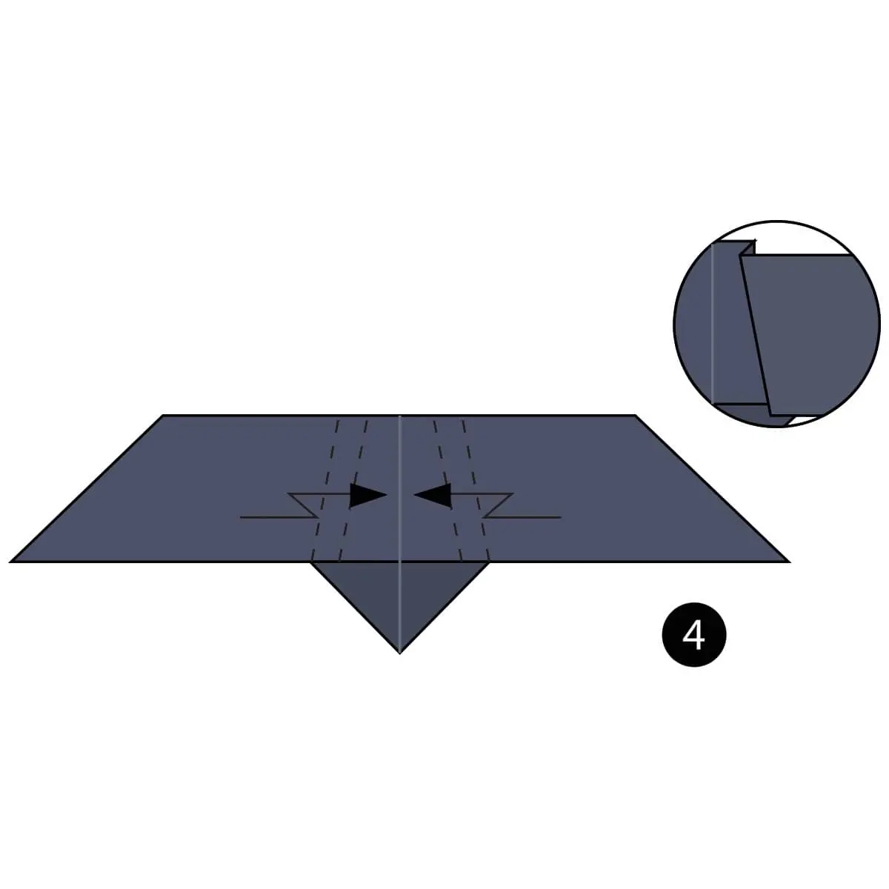

Fold the paper in half and then unfold it.
Fold the paper in half the other way.

Mountain Fold both layers of paper behind the model along the dotted line.
Make a Pleat Fold along the dotted lines on each side.
Fold the top of the paper on each side down along the dotted lines.
Turn the paper over.
Fold both sides of the bottom of the paper along the dotted lines.
Fold the top part of the model down and flatten everything. The circle shows how it should look as you fold it down.
The completed origami bat.